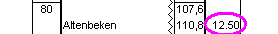

|
|
| You are now arriving at Altenbeken station, where the
Journey ends. The scheduled arrival time is
12:50 PM.  |
| Bring the Train to a stand just before the end of the platform. In the "Cheat Info" the remaining distance to the optimum stopping position is displayed. When you have stopped correctly, "Scheduled stop in Altenbeken" will be displayed. Your Journey is then complete. |